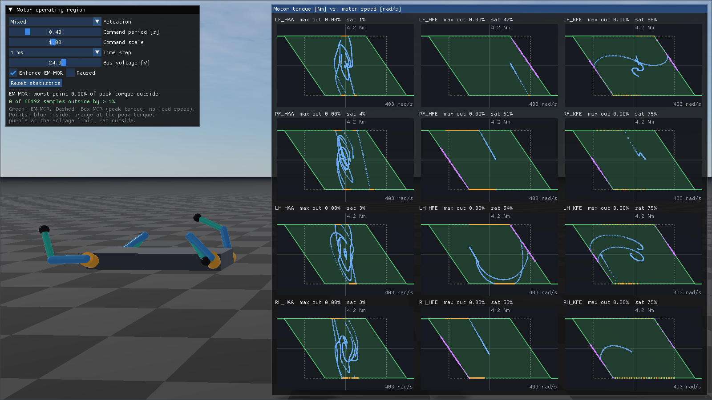
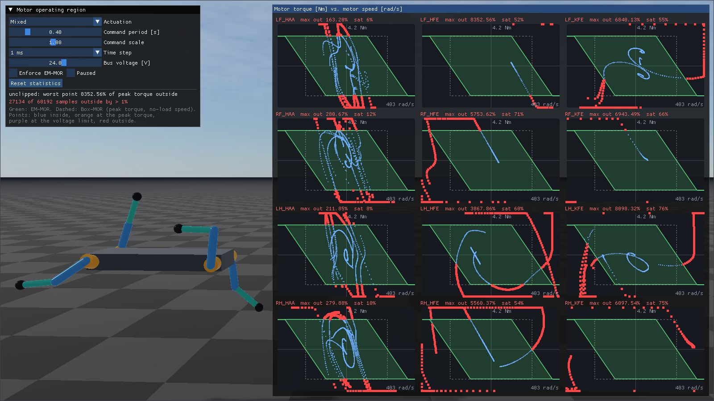

Rayrai Example: Motor Operating Region
Overview
This example drives the twelve actuators of a fixed-base quadruped rig with random commands and
plots, for the motor of every actuator, its operating region and the operating points of the last
second in the motor’s torque-speed plane. Use it to check that RaiSim keeps every motor inside its
region (see Actuators). The commands are actuator torques from an explicit PD
controller, sent with setActuatorTorques(), so the region clips all of them.


The controller knows nothing about these limits and often commands far more torque than the motors can produce; RaiSim has to clip it. With Enforce EM-MOR unticked, the actuator torques are applied without MOR clipping. Joint effort limits do not clip actuator torques either, so the same commands leave the region far behind; the joint velocity limits of the rig keep the run bounded:


Target
CMake target: rayrai_motor_operating_region.
Run
./build-examples/examples/rayrai_motor_operating_region
On Windows, use rayrai_motor_operating_region.exe. The example uses the in-process rayrai
renderer and does not need a TCP viewer.
The control window sets the random actuation (mixed, position targets, velocity sweeps beyond the
no-load speed, or raw torques), its period and scale, the time step (1, 2.5 or 5 ms) and the bus
voltage. The Bus voltage slider (6 to 36 V) calls setBusVoltage() for all actuators, and the
regions shrink and grow with it. The speed axis never shrinks below the range for the 24 V of the
actuator files, so a lower voltage visibly shrinks the region. Enforce EM-MOR calls
setMotorOperatingRegionEnforced(), which toggles MOR clipping of the torques sent through
setActuatorTorques(); it does not affect the joint effort limits, which apply only to
setGeneralizedForce() and the built-in PD controller (the example uses neither). Paused
stops the simulation, and Reset statistics clears the counters.
The model
rsc/motorOperatingRegion/quadruped_rig.urdf puts an actuator on every joint. Their models are
in the linked files in rsc/motorOperatingRegion/actuators/:
<actuator joint="LF_HAA" file="abduction_actuator.xml"/>
<actuator joint="LF_HFE" file="hound_leg_actuator.xml"/>
<actuator joint="LF_KFE" file="hound_leg_actuator.xml">
<coupling joint="LF_HFE" ratio="1"/>
</actuator>
All twelve actuators use the same DC motor on a 24 V bus: \(R = 0.4\ \Omega\),
\(K_t = 0.1\) Nm/A, \(K_v = 10\) rad/s/V and a peak torque of 3 Nm, i.e., a 6 Nm stall
torque, a 120 rad/s corner speed, a 240 rad/s no-load speed and a 360 rad/s overspeed limit. The
actuator files also set the friction and damping of the actuators, measured at the joints; they add
to the 0.02 Nm s/rad joint damping of the URDF. The URDF effort limits (18 Nm and 30 Nm) apply
only to setGeneralizedForce() and the built-in PD controller, which the example does not use;
they do not limit actuator torques. The URDF velocity limits are 1.5 times the no-load speeds at
the joints (60 rad/s for abduction, 36 rad/s for hip and knee). With the operating regions enforced
the motors settle near their no-load speeds; without them, nothing else would stop the commanded
torques from spinning the joints up until the simulation breaks down.
abduction_actuator.xml: the hip abduction actuator, a motor behind a 6:1 reducer.<actuator_model name="abduction_6to1" gear_ratio="6" output_damping="0.01" output_friction="0.2"> <motor resistance="0.4" torque_constant="0.1" velocity_constant="10" bus_voltage="24" peak_torque="3"/> </actuator_model>
hound_leg_actuator.xml: the hip and knee actuators, a motor behind a 10:1 reducer. Like in KAIST Hound, both motors sit on the body and the knee reducer’s ring gear turns with the thigh, so the knee motor also turns with the hip, \(\omega_{KFE,m} = 10\,u_{KFE} + u_{HFE}\). Each knee<actuator>declares that with its<coupling>.<actuator_model name="hound_leg" gear_ratio="10" output_damping="0.02" output_friction="0.3"> <motor resistance="0.4" torque_constant="0.1" velocity_constant="10" bus_voltage="24" peak_torque="3"/> </actuator_model>
The actuators are named after their joints: LF_HAA, LF_HFE, LF_KFE and so on (see
getActuatorNames()).
What the plots show
Green parallelogram: the operating region (EM-MOR). Its top and bottom edges are the peak torque and its slanted edges the bus-voltage limit. It extends beyond the no-load speed in the braking quadrants (II and IV), and beyond the overspeed limit it continues as a line at the peak braking torque: the region limits the torque, not the speed.
Dashed rectangle: the Box-MOR of the peak torque and the no-load speed.
Points: the operating points of the last second, i.e., the motor speed at the beginning of each step, at which RaiSim evaluates the region, and the applied motor torque from
getActuatorStates(). Blue points are inside the region, orange points are at the peak torque, purple points are at the voltage limit, and red points are outside by more than 1 % of the peak torque.Title: the actuator name, the largest distance outside the region since the last reset, as a percentage of the peak torque, and the fraction of steps in which the motor saturated. The control window sums up all motors.
The region holds at 5 ms as well. The voltage limit is applied explicitly, but the rig’s reflected rotor inertia keeps 5 ms below the stability bound \(2\,I R K_v / (G^2 K_t)\) of every actuator (roughly 15 ms for the knee, the lowest; see Actuators).
Full source
1// Actuators and the motor operating region (EM-MOR) of their geared DC motors, defined in the URDF.
2//
3// A fixed-base quadruped rig is actuated randomly. rsc/motorOperatingRegion/quadruped_rig.urdf
4// puts an actuator on every joint with <actuator> elements that link actuator files: a geared hip
5// abduction actuator, and hip and knee actuators whose knee motor also turns with the hip, like
6// KAIST Hound. For the motor of each of the twelve actuators, the plots show the operating region
7// in the motor's torque-speed plane (green), the
8// Box-MOR rectangle of peak torque and no-load speed (dashed), and the operating points of the last
9// second. The actuators are commanded with actuator torques from an explicit PD controller, and
10// RaiSim clips them to the operating regions. Points outside the region by more than 1% of the peak
11// torque are red and counted, so you can check that RaiSim keeps every motor inside its region.
12// The controller knows nothing about these limits: it often commands more torque than the motors
13// can produce, and RaiSim has to clip it. Untick "Enforce EM-MOR" to see where the same commands
14// would go unclipped; the joint velocity limits of the rig (1.5x the no-load speed) keep that run
15// bounded. Joint effort limits clip only setGeneralizedForce() and the built-in PD controller, which
16// the example does not use.
17
18#include <algorithm>
19#include <chrono>
20#include <cmath>
21#include <cstdio>
22#include <memory>
23#include <random>
24#include <string>
25#include <vector>
26
27#include <glm/glm.hpp>
28
29#include "rayrai/example_common.hpp"
30#include "rayrai_example_compat.hpp"
31#include "example_resources.hpp"
32#include "raisim/World.hpp"
33
34namespace {
35
36constexpr double kTolerance = 0.01; // operating points outside by more than this x peak torque
37
38// Random commands: position targets, velocity sweeps beyond the no-load speed, or raw torques.
39enum class Mode : int { MIXED = 0, POSITION = 1, VELOCITY = 2, TORQUE = 3 };
40
41// The actuators are commanded with actuator torques from an explicit PD controller: the motor
42// operating region clips exactly these torques. Actuator i drives joint i of the rig.
43class RandomActuator {
44 public:
45 explicit RandomActuator(raisim::ArticulatedSystem* robot)
46 : robot_(robot), kp_(Eigen::VectorXd::Zero(robot->getDOF())), kd_(kp_), q_(kp_), u_(kp_), tau_(kp_) {}
47
48 Mode mode = Mode::MIXED;
49 float period = 0.4f;
50 float scale = 1.f;
51
52 // new random targets every period
53 void update(double time) {
54 if (time < nextChange_) return;
55 std::uniform_real_distribution<double> unit(-1., 1.), jitter(0.5, 1.5);
56 nextChange_ = time + period * jitter(rng_);
57 const Mode active = mode == Mode::MIXED ? static_cast<Mode>(1 + int(rng_() % 3)) : mode;
58 kp_.setZero();
59 kd_.setZero();
60 q_.setZero();
61 u_.setZero();
62 tau_.setZero();
63 for (int i = 0; i < int(robot_->getDOF()); ++i) {
64 const bool abduction = i % 3 == 0; // has position limits, so it gets no velocity sweeps
65 const Mode jointMode = abduction && active == Mode::VELOCITY ? Mode::POSITION : active;
66 if (jointMode == Mode::POSITION) {
67 kp_[i] = abduction ? 40. : 60.;
68 kd_[i] = 1.;
69 q_[i] = scale * unit(rng_) * (abduction ? 0.5 : 2.5);
70 } else if (jointMode == Mode::VELOCITY) {
71 // up to 1.5x the no-load speed: the voltage limit and, on reversal, regenerative braking
72 kd_[i] = 3.;
73 u_[i] = scale * unit(rng_) * 36.;
74 } else {
75 // up to 1.5x the peak torque at the joint
76 tau_[i] = scale * unit(rng_) * 1.5 * 3. * (abduction ? 6. : 10.);
77 }
78 }
79 }
80
81 // the actuator torques of this step
82 void apply() {
83 const Eigen::VectorXd q = robot_->getGeneralizedCoordinate().e(), u = robot_->getGeneralizedVelocity().e();
84 robot_->setActuatorTorques(tau_ + kp_.cwiseProduct(q_ - q) + kd_.cwiseProduct(u_ - u));
85 }
86
87 void restart() { nextChange_ = 0.; }
88
89 private:
90 raisim::ArticulatedSystem* robot_;
91 Eigen::VectorXd kp_, kd_, q_, u_, tau_;
92 std::mt19937 rng_{42};
93 double nextChange_ = 0.;
94};
95
96// Operating points of one motor: the motor speed at the beginning of the step, at which RaiSim
97// evaluates the region, and the applied motor torque.
98struct Sample {
99 float speed = 0.f, torque = 0.f;
100 raisim::MotorSaturation saturation = raisim::MotorSaturation::NONE;
101 bool outside = false;
102};
103
104struct MotorTrace {
105 std::vector<Sample> ring = std::vector<Sample>(5000);
106 size_t head = 0, count = 0, samples = 0, saturated = 0, outside = 0;
107 double maxOutside = 0.; // [Nm]
108
109 void add(const raisim::ActuatorState& state, const raisim::DcMotorParameters& motor) {
110 const double violation = raisim::motorOperatingRegionViolation(motor, state.motorSpeed, state.motorTorque);
111 Sample& sample = ring[head];
112 sample.speed = float(state.motorSpeed);
113 sample.torque = float(state.motorTorque);
114 sample.saturation = state.saturation;
115 sample.outside = violation > kTolerance * motor.peakTorque;
116 head = (head + 1) % ring.size();
117 count = std::min(count + 1, ring.size());
118 ++samples;
119 saturated += state.saturation != raisim::MotorSaturation::NONE;
120 outside += sample.outside;
121 maxOutside = std::max(maxOutside, violation);
122 }
123
124 void reset() { *this = MotorTrace(); }
125};
126
127struct SimulationSettings {
128 Mode mode = Mode::MIXED;
129 float period = 0.4f;
130 float scale = 1.f;
131 double timeStep = 0.001;
132 float busVoltage = 0.f;
133 bool enforce = true;
134 bool paused = false;
135};
136
137// Read-only motor data shared with the visualization.
138struct MotorTelemetry {
139 std::string name;
140 raisim::DcMotorParameters motor;
141 double fileVoltage = 0.;
142 MotorTrace trace;
143};
144
145struct MotorStatistics {
146 double worst = 0.; // fraction of peak torque
147 size_t outside = 0, samples = 0;
148};
149
150// RaiSim setup, actuator commands, integration, and measurement. No viewer or ImGui calls.
151class MotorOperatingRegionSimulation {
152 public:
153 explicit MotorOperatingRegionSimulation(const std::string& modelPath)
154 : world_(createWorld()), robot_(world_->addArticulatedSystem(modelPath)), actuator_(robot_) {
155 const auto& names = robot_->getActuatorNames();
156 const auto& actuators = robot_->getActuators();
157 motors_.reserve(actuators.size());
158 for (size_t m = 0; m < actuators.size(); ++m)
159 motors_.push_back({names[m], actuators[m].motor, actuators[m].motor.busVoltage, {}});
160 settings_.busVoltage = float(actuators[0].motor.busVoltage);
161 }
162
163 const std::shared_ptr<raisim::World>& world() const { return world_; }
164 const SimulationSettings& settings() const { return settings_; }
165 const std::vector<MotorTelemetry>& motors() const { return motors_; }
166
167 void applySettings(const SimulationSettings& settings, bool resetStatistics) {
168 if (settings.mode != settings_.mode) {
169 actuator_.mode = settings.mode;
170 actuator_.restart();
171 }
172 actuator_.period = settings.period;
173 actuator_.scale = settings.scale;
174 if (settings.timeStep != settings_.timeStep) {
175 world_->setTimeStep(settings.timeStep);
176 resetStatistics = true;
177 }
178 if (settings.busVoltage != settings_.busVoltage) {
179 robot_->setBusVoltage(settings.busVoltage); // all actuators at once
180 const auto& actuators = robot_->getActuators();
181 for (size_t m = 0; m < motors_.size(); ++m) motors_[m].motor = actuators[m].motor;
182 resetStatistics = true;
183 }
184 if (settings.enforce != settings_.enforce) {
185 robot_->setMotorOperatingRegionEnforced(settings.enforce);
186 resetStatistics = true;
187 }
188 settings_ = settings;
189 if (resetStatistics) resetTraces();
190 }
191
192 // Simulate in real time, with a cap on catch-up after a slow frame.
193 void advance(double elapsed) {
194 if (!settings_.paused) accumulator_ += std::min(0.05, elapsed);
195 while (accumulator_ >= world_->getTimeStep()) {
196 step();
197 accumulator_ -= world_->getTimeStep();
198 }
199 }
200
201 MotorStatistics statistics() const {
202 MotorStatistics statistics;
203 for (const auto& motor : motors_) {
204 statistics.worst = std::max(statistics.worst, motor.trace.maxOutside / motor.motor.peakTorque);
205 statistics.outside += motor.trace.outside;
206 statistics.samples += motor.trace.samples;
207 }
208 return statistics;
209 }
210
211 private:
212 static std::shared_ptr<raisim::World> createWorld() {
213 auto world = std::make_shared<raisim::World>();
214 world->setTimeStep(0.001);
215 world->addGround(0., "ground");
216 return world;
217 }
218
219 void step() {
220 actuator_.update(world_->getWorldTime());
221 actuator_.apply();
222 world_->integrate();
223 const auto& states = robot_->getActuatorStates();
224 for (size_t m = 0; m < states.size(); ++m) motors_[m].trace.add(states[m], motors_[m].motor);
225 }
226
227 void resetTraces() {
228 for (auto& motor : motors_) motor.trace.reset();
229 }
230
231 std::shared_ptr<raisim::World> world_;
232 raisim::ArticulatedSystem* robot_;
233 RandomActuator actuator_;
234 SimulationSettings settings_;
235 std::vector<MotorTelemetry> motors_;
236 double accumulator_ = 0.;
237};
238
239// Rayrai scene and ImGui presentation.
240constexpr double kTrailSeconds = 1.;
241
242ImU32 sampleColor(const Sample& sample) {
243 if (sample.outside) return IM_COL32(255, 70, 70, 255);
244 if (sample.saturation == raisim::MotorSaturation::PEAK_TORQUE) return IM_COL32(255, 175, 60, 230);
245 if (sample.saturation == raisim::MotorSaturation::VOLTAGE) return IM_COL32(205, 125, 255, 230);
246 return IM_COL32(110, 175, 255, 200);
247}
248
249// fileVoltage fixes the speed axis, so that a lower bus voltage visibly shrinks the region.
250void drawMotorPlot(const std::string& name, const raisim::DcMotorParameters& motor,
251 double fileVoltage, const MotorTrace& trace, size_t trail, ImVec2 size) {
252 ImDrawList* draw = ImGui::GetWindowDrawList();
253 const ImVec2 origin = ImGui::GetCursorScreenPos();
254 const ImVec2 lo(origin.x + 4.f, origin.y + ImGui::GetTextLineHeightWithSpacing());
255 const ImVec2 hi(origin.x + size.x - 4.f, origin.y + size.y - 4.f);
256
257 const double perVolt = motor.torquePerVolt(), peak = motor.peakTorque;
258 const double kv = motor.velocityConstant;
259 const double xRange = 1.12 * kv * (std::max(motor.busVoltage, fileVoltage) + peak / perVolt);
260 const double yRange = 1.4 * peak;
261 const auto toScreen = [&](double speed, double torque) {
262 const double x = std::clamp(speed / xRange, -1., 1.), y = std::clamp(torque / yRange, -1., 1.);
263 return ImVec2(float(0.5 * (lo.x + hi.x) + 0.5 * x * (hi.x - lo.x)),
264 float(0.5 * (lo.y + hi.y) - 0.5 * y * (hi.y - lo.y)));
265 };
266
267 const ImU32 axisColor = IM_COL32(120, 125, 135, 120), labelColor = IM_COL32(150, 155, 165, 255);
268 draw->AddRectFilled(lo, hi, IM_COL32(22, 25, 31, 235), 3.f);
269 draw->AddLine(toScreen(-xRange, 0.), toScreen(xRange, 0.), axisColor);
270 draw->AddLine(toScreen(0., -yRange), toScreen(0., yRange), axisColor);
271
272 // EM-MOR: the bus-voltage band cut by the peak torque, a parallelogram.
273 const double volt = motor.busVoltage;
274 const double margin = peak / perVolt;
275 const ImVec2 region[4] = {
276 toScreen(kv * (-volt - margin), peak), toScreen(kv * (volt - margin), peak),
277 toScreen(kv * (volt + margin), -peak), toScreen(kv * (-volt + margin), -peak)};
278 draw->AddConvexPolyFilled(region, 4, IM_COL32(70, 190, 105, 55));
279 draw->AddPolyline(region, 4, IM_COL32(95, 215, 125, 255), ImDrawFlags_Closed, 1.5f);
280 // Beyond the overspeed limit, where even full reverse voltage drives more than the peak current,
281 // only the peak braking torque is left: the region continues as a line at -/+ peak torque.
282 draw->AddLine(region[2], toScreen(xRange, -peak), IM_COL32(95, 215, 125, 255), 2.f);
283 draw->AddLine(region[0], toScreen(-xRange, peak), IM_COL32(95, 215, 125, 255), 2.f);
284
285 // Box-MOR: peak torque and no-load speed, dashed.
286 const double noLoad = motor.noLoadSpeed();
287 const ImVec2 box[4] = {toScreen(-noLoad, peak), toScreen(noLoad, peak), toScreen(noLoad, -peak),
288 toScreen(-noLoad, -peak)};
289 for (int side = 0; side < 4; ++side) {
290 const ImVec2 a = box[side], b = box[(side + 1) % 4];
291 for (float t = 0.f; t < 1.f; t += 0.04f)
292 draw->AddLine(ImVec2(a.x + (b.x - a.x) * t, a.y + (b.y - a.y) * t),
293 ImVec2(a.x + (b.x - a.x) * (t + 0.02f), a.y + (b.y - a.y) * (t + 0.02f)),
294 IM_COL32(210, 210, 210, 150));
295 }
296
297 const size_t shown = std::min(trail, trace.count);
298 for (size_t i = 0; i < shown; ++i) {
299 const size_t index = (trace.head + trace.ring.size() - shown + i) % trace.ring.size();
300 const Sample& sample = trace.ring[index];
301 const ImVec2 p = toScreen(sample.speed, sample.torque);
302 const float r = sample.outside ? 2.5f : 1.2f;
303 draw->AddRectFilled(ImVec2(p.x - r, p.y - r), ImVec2(p.x + r, p.y + r), sampleColor(sample));
304 }
305
306 char text[160];
307 std::snprintf(text, sizeof(text), "%s max out %.2f%% sat %.0f%%", name.c_str(),
308 100. * trace.maxOutside / peak,
309 trace.samples ? 100. * double(trace.saturated) / double(trace.samples) : 0.);
310 draw->AddText(origin, trace.outside ? IM_COL32(255, 110, 110, 255) : IM_COL32(225, 228, 235, 255),
311 text);
312 std::snprintf(text, sizeof(text), "%.0f rad/s", xRange);
313 draw->AddText(ImVec2(hi.x - ImGui::CalcTextSize(text).x - 2.f,
314 hi.y - ImGui::GetTextLineHeight() - 1.f), labelColor, text);
315 std::snprintf(text, sizeof(text), "%.1f Nm", yRange);
316 draw->AddText(ImVec2(0.5f * (lo.x + hi.x) + 3.f, lo.y + 1.f), labelColor, text);
317 ImGui::Dummy(size);
318}
319
320void positionCamera(raisin::RayraiWindow& viewer) {
321 auto& camera = viewer.getCamera();
322 // The plots cover the right of the window; aim so that the rig sits in the free lower left.
323 camera.position = glm::vec3(1.64f, -3.55f, 1.57f);
324 camera.target = glm::vec3(1.445f, 0.44f, 1.374f);
325 const auto direction = glm::normalize(camera.target - camera.position);
326 camera.yaw = glm::degrees(std::atan2(direction.y, direction.x));
327 camera.pitch = glm::degrees(std::asin(direction.z));
328 camera.zoom = 45.f;
329 camera.zNear = 0.03f;
330 camera.zFar = 60.f;
331 camera.setCameraFixedTarget(true);
332 camera.setCameraFixedDistance(true);
333 camera.update(false);
334}
335
336class MotorOperatingRegionVisualization {
337 public:
338 ~MotorOperatingRegionVisualization() {
339 // Rayrai resources must be released while the OpenGL context is still alive.
340 viewer_.reset();
341 if (initialized_) app_.shutdown();
342 }
343
344 bool init(const std::shared_ptr<raisim::World>& world) {
345 if (!app_.init("RaiSim motor operating region", 1600, 900)) return false;
346 initialized_ = true;
347 ImGui::GetIO().IniFilename = nullptr; // keep ImGui scratch files out of the source tree
348 for (auto* object : world->getObjList())
349 if (object->getObjectType() == raisim::ObjectType::HALFSPACE)
350 static_cast<raisim::Ground*>(object)->setAppearance("checkerboard");
351 viewer_ = std::make_shared<raisin::RayraiWindow>(world, 1600, 900);
352 viewer_->setRenderQualitySettings(raisin::RayraiWindow::defaultRenderQualitySettings(
353 raisin::RayraiWindow::RenderQualityPreset::Balanced));
354 raisim_examples::setRayraiBackgroundColorRgb255(*viewer_, {30, 34, 42, 255});
355 raisim_examples::addRayraiBasicSceneLights(*viewer_);
356 positionCamera(*viewer_);
357 return true;
358 }
359
360 bool processEvents() {
361 app_.processEvents();
362 return !app_.quit;
363 }
364
365 void render(MotorOperatingRegionSimulation& simulation) {
366 app_.beginFrame();
367 app_.renderViewer(*viewer_);
368 drawControlPanel(simulation);
369 drawPlots(simulation);
370 app_.endFrame();
371 }
372
373 private:
374 void drawControlPanel(MotorOperatingRegionSimulation& simulation) {
375 SimulationSettings settings = simulation.settings();
376 int mode = int(settings.mode);
377 int timeStep = settings.timeStep == 0.001 ? 0 : settings.timeStep == 0.0025 ? 1 : 2;
378 ImGui::SetNextWindowPos(ImVec2(12, 12), ImGuiCond_FirstUseEver);
379 ImGui::SetNextWindowBgAlpha(0.88f);
380 ImGui::Begin("Motor operating region", nullptr, ImGuiWindowFlags_AlwaysAutoResize);
381 if (ImGui::Combo("Actuation", &mode,
382 "Mixed\0Random position targets\0Random velocity sweeps\0Random torques\0")) {
383 settings.mode = static_cast<Mode>(mode);
384 }
385 ImGui::SliderFloat("Command period [s]", &settings.period, 0.05f, 2.f, "%.2f");
386 ImGui::SliderFloat("Command scale", &settings.scale, 0.1f, 2.f, "%.2f");
387 if (ImGui::Combo("Time step", &timeStep, "1 ms\0002.5 ms\0005 ms\0")) {
388 settings.timeStep = timeStep == 0 ? 0.001 : timeStep == 1 ? 0.0025 : 0.005;
389 }
390 ImGui::SliderFloat("Bus voltage [V]", &settings.busVoltage, 6.f, 36.f, "%.1f");
391 ImGui::Checkbox("Enforce EM-MOR", &settings.enforce);
392 ImGui::SameLine();
393 ImGui::Checkbox("Paused", &settings.paused);
394 const bool resetStatistics = ImGui::Button("Reset statistics");
395 simulation.applySettings(settings, resetStatistics);
396 ImGui::Separator();
397 const MotorStatistics statistics = simulation.statistics();
398 ImGui::Text("%s: worst point %.2f%% of peak torque outside", settings.enforce ? "EM-MOR" : "unclipped",
399 100. * statistics.worst);
400 ImGui::TextColored(statistics.outside ? ImVec4(1.f, 0.45f, 0.45f, 1.f) : ImVec4(0.55f, 0.9f, 0.6f, 1.f),
401 "%zu of %zu samples outside by > %.0f%%", statistics.outside, statistics.samples,
402 100. * kTolerance);
403 ImGui::TextDisabled("Green: EM-MOR. Dashed: Box-MOR (peak torque, no-load speed).\n"
404 "Points: blue inside, orange at the peak torque,\n"
405 "purple at the voltage limit, red outside.");
406 ImGui::End();
407 }
408
409 void drawPlots(const MotorOperatingRegionSimulation& simulation) {
410 const auto& motors = simulation.motors();
411 const ImVec2 display = ImGui::GetIO().DisplaySize;
412 const float plotWidth = std::min(980.f, display.x * 0.62f);
413 ImGui::SetNextWindowPos(ImVec2(display.x - plotWidth - 10.f, 10.f), ImGuiCond_Always);
414 ImGui::SetNextWindowSize(ImVec2(plotWidth, display.y - 20.f), ImGuiCond_Always);
415 ImGui::SetNextWindowBgAlpha(0.82f);
416 ImGui::Begin("Motor torque [Nm] vs. motor speed [rad/s]", nullptr,
417 ImGuiWindowFlags_NoResize | ImGuiWindowFlags_NoMove | ImGuiWindowFlags_NoCollapse);
418 const int columns = 3, rows = int((motors.size() + columns - 1) / columns);
419 const ImVec2 available = ImGui::GetContentRegionAvail();
420 const ImVec2 cell((available.x - (columns - 1) * ImGui::GetStyle().ItemSpacing.x) / columns,
421 (available.y - (rows - 1) * ImGui::GetStyle().ItemSpacing.y) / rows);
422 const size_t trail = size_t(kTrailSeconds / simulation.settings().timeStep);
423 for (size_t m = 0; m < motors.size(); ++m) {
424 if (m % columns != 0) ImGui::SameLine();
425 drawMotorPlot(motors[m].name, motors[m].motor, motors[m].fileVoltage, motors[m].trace, trail, cell);
426 }
427 ImGui::End();
428 }
429
430 ExampleApp app_;
431 std::shared_ptr<raisin::RayraiWindow> viewer_;
432 bool initialized_ = false;
433};
434
435} // namespace
436
437int main(int, char** argv) {
438 MotorOperatingRegionSimulation simulation(
439 exampleRscPath(argv[0], "motorOperatingRegion/quadruped_rig.urdf"));
440 MotorOperatingRegionVisualization visualization;
441 if (!visualization.init(simulation.world())) return -1;
442
443 auto previous = std::chrono::steady_clock::now();
444 while (visualization.processEvents()) {
445 const auto now = std::chrono::steady_clock::now();
446 simulation.advance(std::chrono::duration<double>(now - previous).count());
447 previous = now;
448 visualization.render(simulation);
449 }
450
451 return 0;
452}